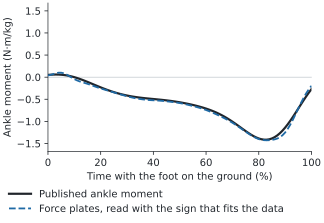
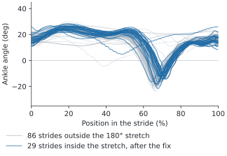
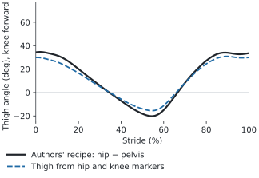

Broken vs fixed data
Each card shows one problem LocoHub found in a source dataset or in LocoHub’s own unreleased rebuild code. The Before figure shows the data as published, or as LocoHub’s unreleased build computed it; the After figure shows what LocoHub will release. Both are drawn against the same independent check, such as force plates or markers.
Most corrections are not in downloadable files yet. Each card states its status. A card means the finding was reproduced by a second, independent reviewer; it is not scientific approval of the dataset.
Georgia Tech 2024: the ankle sign is the opposite of the README
Documented · values unchanged · no new GT24 release yet
Cause. The dataset README says ankle plantarflexion is positive, but the published ankle angles and moments are dorsiflexion-positive: force-plate moments agree in sign and size in 12 of 12 sampled legs, and push-off work and toe-walking postures agree too.
LocoHub. LocoHub keeps the published ankle values, which already match its dorsiflexion-positive columns, and does not apply the README sign. The hip and knee statements in the README are correct.


BT07, normal_walk_1_2_1-2_off, left leg: mean of 18 stances, one of 12 legs drawn with seed 20261031. Evidence: ankle sign audit (JSON). Task GT24-C02, independently verified 2026-10-30.
Georgia Tech 2023: joint moments are per kilogram, not N·m
Documented · corrected files not yet released
Cause. The README gives joint moments in N·m and powers in W, but the published values are already divided by body mass: against force-plate moments in N·m they scale by 1/64 to 1/90 in all 8 sampled legs, never by 1.
LocoHub. LocoHub labels these values N·m/kg and W/kg and does not divide by mass a second time. Which mass was used is the next card.


AB01, incline_walk_2, left leg, one stance; drawn with seed 20261031 from the 4 sampled legs of participants whose own mass was the divisor, so the units question is shown alone. Evidence: moment units audit (JSON). Task GT23-C02, independently verified 2026-10-30.
Georgia Tech 2023: moments divided by another participant's mass
Correction decided · per-trial check planned · not yet released
Cause. In 9 of 12 participants the published moments were not divided by the participant’s own body mass; in most of them the divisor is exactly another participant’s listed mass, and it can change between trials of one participant. Level-walking moments are 0.80 to 1.41 times their correct per-kilogram value.
LocoHub. Each trial will be rescaled to its participant’s own mass after every trial’s divisor has been measured; trials whose divisor cannot be matched to a recorded mass will not be rescaled by guesswork.

All 12 participants shown. Evidence: normalizing mass audit (JSON). Task GT23-C03, independently verified 2026-10-31.
UMich 2021: a 180° stretch in one right ankle
Correction decided · not yet released
Cause. For 5,429 frames of one recording’s right ankle (AB07, 10° incline), the published angles are the second, equivalent solution of the same ankle orientation, which moves the sagittal angle by about 180°. It is a choice of solution, not ankle motion.
LocoHub. Those frames will be re-expressed in the standard solution and each one logged; 2 of the 31 strides inside the stretch also contain one-frame jumps that this cannot fix and will be left out. The other ankle channels and the source copy are unchanged.


All strides of the right ankle in this recording; 29 of 31 inside strides kept. Evidence: episode census (JSON) · convention audit (JSON). Task UM21-C03, independently verified 2026-10-30.
UMich 2021: one recording’s pelvis computed facing backwards
Correction decided · not yet applied or released
Cause. In one of 50 treadmill recordings (AB04, level walking), the motion-capture software computed the pelvis facing backwards (heading about 180°), so the published pelvis tilt has the wrong sign in 114 of 114 right-side strides, as do obliquity and the thigh and shank angles built on it. Hip, knee and ankle angles and moments are unaffected.
LocoHub. For that recording only, pelvis tilt will be sign-flipped from the marker evidence and thigh and shank recomputed from it; the change is logged per recording.


Right side, frames 3512–3675: the stride the census drew with seed 20261101; side drawn with seed 20261031. Evidence: pelvis heading census (JSON). Task UM21-P01, independently verified 2026-10-31.
UMich 2021: thigh and shank angles from the wrong pelvis sign
Recipe decided · not yet released
Cause. LocoHub’s treadmill rebuild code (not released) adds pelvis tilt to hip flexion using the source’s pelvis sign (forward tilt positive). The thigh angle is hip flexion minus that tilt, as in the authors’ own recipe, so the rebuild’s values are off by about twice the pelvic tilt. The legacy UMich download used a different recipe and is not shown here.
LocoHub. Thigh = hip − pelvis and shank = hip − pelvis − knee, to be released as planar estimates under the standard names. Under LocoHub’s sign rule, where forward pelvis tilt is negative, this is thigh = pelvis + hip.


AB08 i5 right leg, frames 12709–12829: the stride the audit drew with seed 20261028. Pelvis tilt in this stride: median 19°. Evidence: thigh/shank probe (JSON) · field policy (JSON). Task UM21-C01, independently verified 2026-10-27.
UMich 2021: treadmill task intervals on an offset clock
Correction decided · not yet released
Cause. The published task intervals (when belt speed or incline changes) are timed on the belt-speed record, not on the motion data. In 4 of 50 treadmill recordings that clock is 1.7 to 7.0 s off the motion data, measured from the heel and toe marker speed, so strides near a change get the wrong task label; 2 recordings have no belt-speed record and cannot be checked. The others agree within 0.2 s.
LocoHub. Recordings that fail this check leave the treadmill release; no interval is shifted or estimated. One of them, AB01 i5, is also a copy of another recording (next card).

All 50 treadmill recordings shown. Evidence: clock census (JSON). Evidence independently verified 2026-10-31. Task UM21-T02 is not done; José approved showing it on 2026-10-31.
UMich 2021: the AB01 5° incline recording is a copy of the 10° one
Copy removed from release scope (coordinator resolution under D-UM21-T02-1 = A) · not yet released
Cause. The AB01 recording labelled 5° incline contains the same motion, joint and force-plate data, byte for byte, as the AB01 10° recording; only its task timing differs. The walking slope measured from it is 10.1° from the foot path and 9.8° from the force plates, not 5°. The other 48 recordings match their labels within the foot-path tolerance.
LocoHub. The 5° copy fails the clock check, so it leaves the treadmill release under the decision to drop such recordings. The 10° recording passes the slope and clock checks and stays, with a note that its data also appear under the 5° label. This handling is the coordinator’s logged resolution; José can still ask to drop the 10° recording too.

All 50 treadmill recordings shown. Evidence: slope check (JSON) · clock census, duplicate list (JSON) · logged resolution (backlog). Evidence independently verified 2026-10-31. Task UM21-T02 is not done; José approved showing it on 2026-10-31.
Context: one sign rule for every dataset
Several cards are about which sign a dataset uses. LocoHub columns follow one written sign rule: segment angles are positive counterclockwise with the person facing right, and joint angles and moments are positive in their named direction (hip flexion, knee flexion, ankle dorsiflexion). Pelvis forward tilt is therefore negative in LocoHub files although many sources report it as positive. This is a convention, not an error in any dataset.
Adopted 31 October 2026 · current downloads are legacy and predate it

Status as of 31 October 2026. Figures are drawn only from values stored in the linked audit records; no data were re-read to make this page. Findings still under review are not shown. Back to testing & data quality.